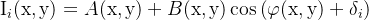

平面干涉仪设计
平面干涉仪设计
1.zemax设计方法
基于菲索干涉的基本原理，仿真平面干涉仪器；

点光源经过准直透镜， 分束镜， 经过参考面反射产生参考光，待测物体产生反射光，两者在分束镜上同时反射到探测器上，此时两束光有一定的光程差，存在干涉，于探测器产生干涉条纹。

2.仿真测试
一、仿真测试目标：
1、实现斐索平面干涉仪的光学系统设计；
2、通过探测器检测图案，计算待测物表面的PV值，测试精度达到λ/20;
二、仿真测试流程：
1、调制光学系统下各部件参数，使得探测器成像结果相对较好，减少光学系统对后期图像提取的干扰；
2、提取图像探测器图像,进行图像预处理，减少背景噪声的干扰；
3、基于光的波动性，通过四步相移法，解包裹，恢复待测物体表面形貌计算PV值。
三、仿真原理：
理想情况下，等厚干涉形成的是平行的等间距的条纹；光程差每变化λ/2 的距离，条纹平移一个周期；

干涉在本质上可以看作两束光能量的重新分布，分布遵循余弦函数。这种形态是由条纹之间的相位差决定，相位差由光程差决定；
当待测面存在瑕疵，突起，导致光程差呈现非线性变化，条纹就会发生弯曲；同时相位差也会发生对应变化。

四、移相干涉的原理：
移相干涉测量过程中，干涉图像中的条纹分布是由参考光束和测试光束叠加形成的干涉场导致，干涉场的光强信息与干涉图中像素点的灰度信息相关，其分布函数公式可表示为：

其中：A(x,y)是干涉图的背景光强，B(x,y)是调制度，φ(x,y)是待测物的波面初始相位信息，δ_i 是移相量，(x,y)是干涉图中像素点的坐标信息。
参考镜和被测镜间的面形差P(x,y)与位相分布的关系可表示为公式

λ为激光器波长（本文为He-Ne激光器——632.8nm），在移相干涉测量技术中，测量单位为λ。当通过解相算法处理干涉图组的像素数据，可计算出I_i (x,y)，并进一步得到面形信息φ(x,y)以完成检测工作。
四步移相法可以有效计算出理想移相图组的相位分布。先获取无移相的干涉图像，再进行三次移相间隔为π/2的移相，每次移相完成采集1帧图像，共得到4帧相位相差π/2的干涉图像，其图像光强信息分别为：

将上面4个式子进行公式变换消去A和B可得到和四帧图像像素信息的关系式：

四步移相算法求解速度快，适合对理想干涉图组进行求解。